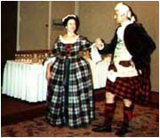

Contra Dancing
Contra dancing comes from a long heritage of European dance. Court dances, although not popular with the common folk, were the order of the day at European courts from the graceful court dances of the Middle ages, through the athletic Galliards and Voltas of the Renaissance and into the stately Minuets of the 18th Century. These dances were highly evolved forms requiring considerable teaching and practice. In the court of Queen Elizabeth, if one could not dance to Her Majesty's liking, a rebuke would be forthcoming. Even so, the Queen is said to have enjoyed Country Dances, as well.